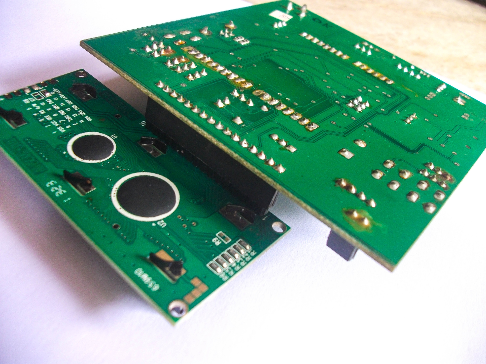

Kompact Intellegent Drumming Unit is an open-source electronic Drumset
aimed at giving people a better understanding of how an electronic
instrument works. The brain of KIDU is an arduino connected to an SD
card Shields. A very important feature of KIDU is that it doesn't use any
audio codec decoders like an mp3 shield or a wav shield. It uses .RAW files
in the sound bank to play the sounds,which are stored in the SD card. The
audio output is an approximated audio signal from a lowpass filter
conected to the PWM out of the Arduino. So there is a trade off between
simplicity of the hardware and quality of audio.


I also developed a software called "Rhythm Manager" for easy conversion
of audio files from wav format to raw format. The UI is very user friendly
and intutive with visual aids and audio feedback.
All the periferals mentioned above are inbuilt on to the board and do not require any shields or add-ons. The burgstrips are also shield friendly. All the periferals are already wired on and can be selecteced by using the jumper pins.

The whole board was designed , fabricated and documented by me and my mentor Ajith Peter on behalf of Standard Process, a Company owned by my mentor. I went through the whole proess of making a product from scratch. We converted an ordinary convection Oven into a reflow oven , manually "picked and placed" almost 100 SMD components and soldered the remaining parts to 150 boards. And we did a workshop for 130 students with these boards. We did the whole thing by just the two of us. and in the end we were able to sell the board for about $20 per board.

Use this area of the page to describe your project. The icon above is part of a free icon set by Flat Icons. On their website, you can download their free set with 16 icons, or you can purchase the entire set with 146 icons for only $12!

Aquaponics is a farming technique which uses fish waste as food for plants.It
has been getting a lot of attention lately since it will be a very
viable , fast , econimical and efficient method of farming. Especially with
farm lands and other natural resources depleting very fast.

In this project me and my team mates wanted to control the whole system
electronicaly from a webpage , hosted it the local network. We cound control
the water flow into and outside the fish tank and into the plants basin, the
fish feeder and the valves for fresh water and dirty water.

We hosted the webpage in an arduino with an ethernet shield and connected
all the motors, valves and other controls and indicators to the arduino via a
relay module. Rest is magic written in code.

We originaly wanted to go a step further and make the control accessable to
anyone on the internet throug their Twitter or Facebook account. We wanted
the controls to work according to the facebook posts or Tweets when a user
tweets a particualar command. But that was a litte difficult to implement on
an arduino and we are planning to do it on a raspberry pi soon.


Mr Ranjith Antony is the CEO of Perleybrook Labs LLC, where I am currently employed. He started his career as a lecturer at Model Engineering College and later moved to the US and is currently settled at Portsmouth,New Hampshire. He worked at Avenir computer services,Atniv Inc,Pelco,Schneider Elecric and now Perleybrook Labs. He is an expert on Bluetooth technology and MAC,iOS,Android and Web applications. He is the Co-author of the book "Bluetooth For Java".He is one of the most creative,geeky, diplomatic and down-to-earth person I know.
Ranjith as the CEO of Perleybrook Labs, maintains a very unconventional work culture.The employees are given total freedom and encourages creativity.For me, Ranjith is more of a mentor than a boss. Many at time I am given total freedom to create , improve on and to learn new areas. Such an atmosphere in a workplace is so rare and this helped me to bring out the best in me during my time in Peleybrook Labs.. Ranjiths guidence helped me to be better at programing , documentation and also inspired me to do stop-motion Animations for the tutorials made in Perleybrook and Out side.
NSS College of Engineering was awarded the Outstanding Engineering Institute in South India in 2015.It is one of the most reputed, premier Engineering educational institutions in Kerala, affiliated to the University of Calicut.
incomplete...